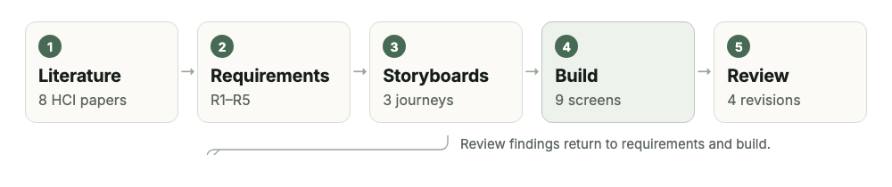
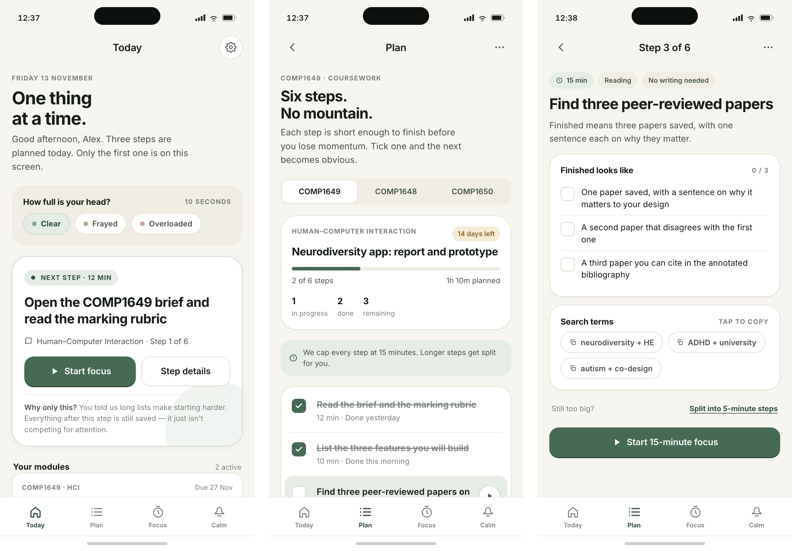
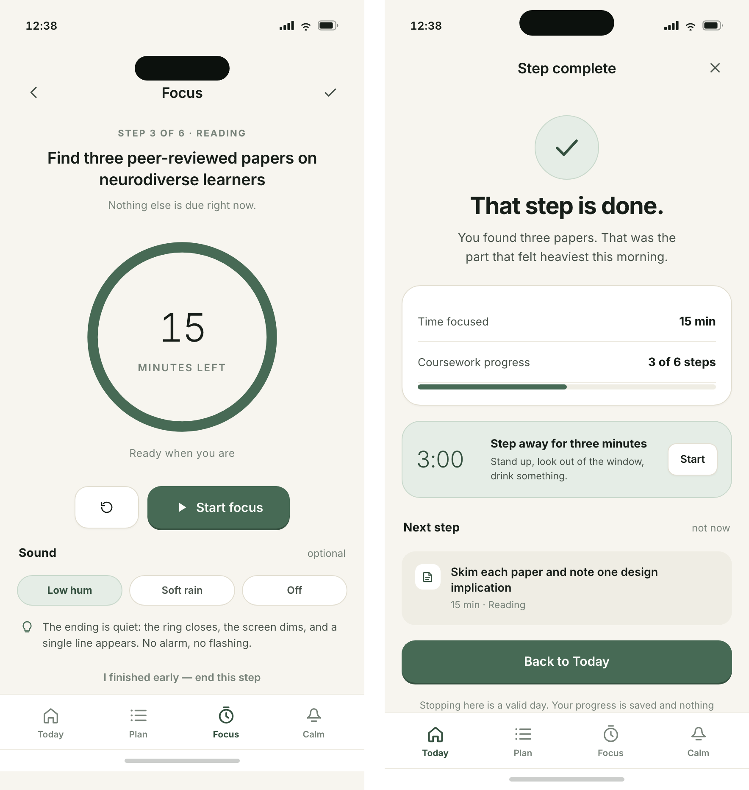
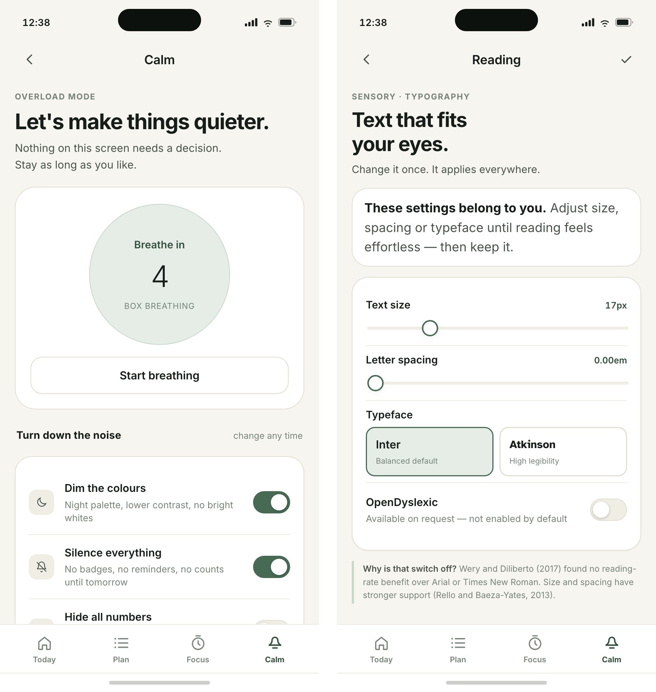
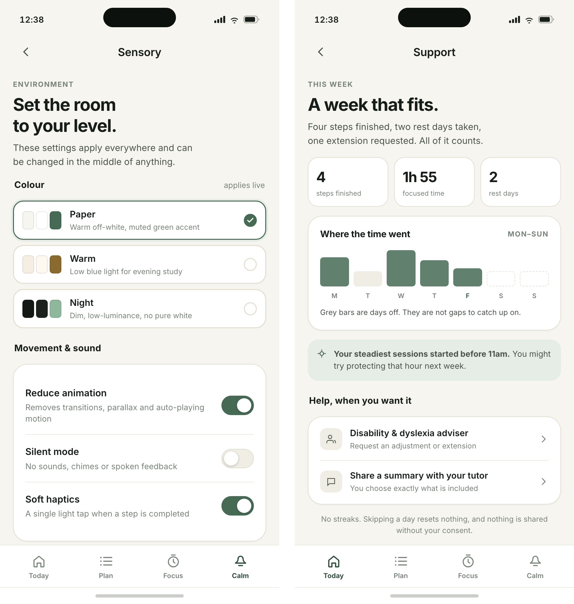

Figures 1–5 show the nine prototype screens. Each screen is also supplied as a separate HTML file, so the artboards can be opened and reviewed individually. The interactive build is the reference artefact for Section 4.
Neurodiversity reframes variation in cognition as natural difference rather than deficit (Singer, 1999). Neurodivergent students enter higher education with the same academic potential as their peers, but they meet institutions organised around assumptions about attention, memory and energy that many of them do not share (Clouder et al., 2020). The difficulties cluster less around ability than around executive function: deciding what to do first, estimating how long it will take, starting, and stopping before exhaustion. Digital tools often add to the problem, because dashboards, notifications and streak counters turn support into another performance to manage (Spiel et al., 2022).
This report documents the design of NeuroPulse HE, a mobile companion for neurodivergent undergraduates that addresses Option A of the COMP1649 brief. The product treats attention and energy as variable conditions to be accommodated rather than deficits to be corrected. It supports three journeys: planning a piece of work into short steps; starting and finishing one step with a focus timer and an explicit rest; and recovering from overload before returning. Section 2 presents an annotated bibliography, Section 3 the conceptual design and principles, Section 4 the nine-screen prototype, Section 5 an empirical study, and Section 6 a reflection on practice.
Each source below contributed a distinct design requirement rather than confirming the same point; each reflection states why it was chosen and what it changed in the prototype.
The design rests on four assumptions drawn from the literature. First, the barrier is usually initiation rather than intention, so the first action should be small and concrete (Sonne et al., 2016). Second, a visible backlog increases avoidance, so unfinished work should be stored rather than displayed. Third, rest is part of work rather than a reward for it, following students' accounts of sensory and emotional regulation (Van Hees, Moyson and Roeyers, 2015). Fourth, no single configuration fits every student, so the interface must be adjustable without diagnosis or disclosure (Morris, Begel and Wiedermann, 2015; Clouder et al., 2020).
These assumptions define five tasks: capture a deadline, decompose it, start one step, rest, and recover or ask for help. The interaction model is deliberately narrow. The user manipulates a few direct controls — a step card, a timer, sliders and switches — receives ambient feedback rather than alerts, and meets deeper options only when they ask. Work is broken into 15- to 25-minute steps, following evidence that bounded microtasks let people progress in windows they actually have (Teevan, Iqbal and von Veh, 2016), and each screen limits what must be held in working memory (Sweller, 1988).
The organising metaphor is a cleared desk with one index card on it, not a dashboard. The visual language follows: warm paper surfaces, a single sage accent, generous spacing, and no trophy, flame or rocket icons. Icons are literal outline drawings of a house, a list, a clock and a bell, paired with text labels where a symbol could be ambiguous. This deliberately avoids the urgency and competition that productivity software often signals through colour.
Following the prototype-generation method described by Sharp, Preece and Rogers (2023, ch. 12.5), I moved from storyboards to paper sketches to a coded mid-fidelity prototype (Figure 1). Storyboarding forced the three journeys into a sequence of decisions before any visual polish; paper sketching exposed how much text a single card could carry; the coded build made timing, state and theming testable in a way that static frames are not. The process was iterative: findings returned to the requirements, and two were rewritten after the first build (Section 4).

Norman (2013) treats design principles as diagnostic tools rather than rules. The prototype applies five, each visible in the screens that follow.
Visibility. The home screen shows one next step and the time it needs; the other steps exist but are not visible until requested (Figure 2a). Visibility is used as a filter rather than exposure: the user can see where they are, but not everything at once. The current tab is marked by colour and weight, so position is always legible.
Feedback. Every action answers immediately. Selecting a colour theme re-themes the whole artboard on the same tap (Figure 5a), a completed step produces a tick and a quiet confirmation, and the timer changes state visibly when it ends. Feedback is deliberately calm: no confetti, no sound by default, no interruption that pulls attention away. Switches expose state through aria-checked, so feedback is also available non-visually.
Constraints. Each screen offers one primary action, and the start button appears only after the definition of “done” is visible (Figure 2c). Sliders bound their range and show the current value, so a user cannot accidentally choose an unreadable size. Constraint is applied to the task, not the person: the user can always leave a step, change a setting or stop the timer. A constraint that traps a user would reproduce the loss of control the product exists to reduce.

Consistency. One token sheet defines colour, radius, spacing and type across nine screens, so the same card, row and button grammar appears everywhere. State is never signalled by colour alone: the selected theme carries a tick as well as a border, and completed steps use a tick as well as a change of weight. Language is consistent too: “step”, “rest” and “focus” mean the same thing on every screen.
Affordance. Controls look like what they do. Switches have a visible track and knob, sliders have a track and a value, rows that lead somewhere carry a chevron, and every target is at least 44 pixels high. Signifiers supplement affordance where consequences are not obvious: colour is labelled “applies live”, and the reading screen explains why OpenDyslexic is off by default (Figure 4b).
Mapping is used where a control has a spatial analogy: the week chart maps bars to days, and rest days use the neutral surface colour rather than an error colour (Figure 5b), so the chart describes rather than evaluates.
The prototype is nine standalone HTML/CSS screens at 430 × 932 pixels, sharing one token sheet and one interaction script. Each screen opens on its own, so every artboard can be reviewed in isolation, while links follow the journeys for a reviewer walking them. The browser build is the reference artefact because it makes interaction inspectable: theme switching, the timer, the checklist, the breathing pacer and the sliders behave as they would in a product. The brief specifies Axure RP or Figma Design; these screens use the same artboard dimensions and components and import into Figma, but the coded version preserves behaviour a static import would lose.
Three journeys are supported. Plan to rest: one step, its definition of done, a focus session, then a rest (Figures 2 and 3). Overload to calm: a low-demand screen offers paced breathing and mutes the rest of the product until the student is ready (Figure 4a). Personalise to read: sensory and reading controls change the interface already in use (Figures 4b and 5). Table 1 maps requirements to implementation and evidence.
| Requirement | Implementation | Evidence |
|---|---|---|
| R1 One next action | Today shows a single step; remaining steps are one tap away. | Sonne et al. (2016) |
| R2 Rest as a state | A dedicated rest screen follows each focus session. | Van Hees, Moyson and Roeyers (2015) |
| R3 Adjustment without disclosure | Reading and sensory controls are in the main navigation. | Morris, Begel and Wiedermann (2015); Clouder et al. (2020) |
| R4 No normative scoring | Steps, time and rest are separate counts; no streaks or badges. | Spiel et al. (2022) |
| R5 Route to humans | Support screen links to an adviser and to a scoped tutor summary. | McDowall and Kiseleva (2024) |
Table 1. Requirements, implementation and the evidence behind each.

Four iterations changed the design. Streaks and weekly scores were removed after Spiel et al. (2022); the support screen now reports steps, focused time and rest days separately, because a composite score inevitably ranks one kind of week above another. OpenDyslexic is present but off by default: Wery and Diliberto (2017) found no reading-rate or accuracy benefit over Arial or Times New Roman, so size and spacing take the prominent position instead (Rello and Baeza-Yates, 2013). The switch is retained with an inline explanation, because removing a familiar option silently would feel like a judgement.
Rest was originally a modal on the focus screen; it became a full screen, because a modal can be dismissed as an interruption whereas a screen frames rest as the next legitimate task. An “interface density” control was cut because it duplicated text size, added a decision without benefit and failed the constraint principle. Cutting a feature already built was the clearest lesson: the prototype improved most when something was removed.

The prototype is mid-fidelity in Sharp, Preece and Rogers' (2023) sense: layout, content, interaction and state are fixed, while accounts, notifications, sync and a full accessibility audit are not. Its purpose is to communicate the concept, to act as the instrument for the Section 5 study, and to make the central assumption testable: that showing less helps students start.

The study tests the assumption that carries most of the design: that reducing visible workload to one next action, and treating rest as an explicit state, lowers perceived workload and shortens the time before a student begins. The research questions are:
RQ1. Compared with a conventional task-list interface, does the single-next-action prototype reduce perceived workload and time to first action when students begin a real assignment?
RQ2. How do neurodivergent students interpret the absence of streaks, scores and badges?
The hypothesis for RQ1 is that NASA-TLX scores will be lower and time to first action shorter in the NeuroPulse condition, with no reduction in steps completed; the null hypothesis is no difference. RQ2 is exploratory and qualitative, because the meaning of removing gamification is unlikely to be captured by a scale.
Design and participants. A within-subjects experiment with counterbalanced conditions was chosen because executive function varies widely, so a between-subjects design would need a far larger sample. Sixteen students aged 18 or over will be recruited through the disability service and neurodivergent student societies. Participation requires neither a diagnosis nor disclosure to teaching staff, and students who contributed to the design are excluded.
Materials. Two builds are used: the full prototype and a list-only baseline with the same visual style but the whole task list, no single-action framing and no rest screen. Materials comprise a consent form (Appendix B1), background questionnaire (B2), task script (B3), NASA-TLX (Hart and Staveland, 1988), the System Usability Scale (Brooke, 1996), an interview schedule (B4) and a debrief sheet (B5). Sessions are audio-recorded with consent and the screen is captured.
Procedure. Sessions last about 60 minutes. After consent and briefing, participants complete a five-minute practice task. In each condition they receive the same 1,500-word brief, plan it, identify a first action and work for ten minutes while thinking aloud. A five-minute break separates conditions, and order is counterbalanced. The session ends with the interview and debrief, including signposting to wellbeing support.
Analysis. Data will be tested for normality (Shapiro–Wilk) and analysed with a paired t-test or Wilcoxon signed-rank test, reporting effect size alongside significance. SUS scores will be calculated using Brooke's (1996) rules. Interviews will be transcribed verbatim and analysed using Braun and Clarke's (2006) six phases, with a second coder reviewing initial codes. Findings will be triangulated: if workload falls but students describe the screen as infantilising, that tension is itself a result.
Ethics. Ethical approval will be sought before recruitment. Consent is informed and revocable, diagnosis is never required, recordings are encrypted and destroyed after transcription, and quotes are anonymised. Because the prototype deliberately induces a low-demand state, a distress protocol lets participants stop at any point and gives the researcher a script for ending the session and signposting support. The main limitations are carryover between conditions and the artificial setting; a field study over several weeks would test whether the effect survives a real term.
The insight that will stay with me is that accessibility is architecture, not a settings menu. The most effective decisions were subtractions: one card instead of a dashboard, no streaks, no density control, no dyslexia font switched on by default. Each removal made the product more usable for the people it was for, and each was justified by evidence rather than taste. I had assumed a good HCI outcome would come from adding considerate features; the work showed that it more often comes from deciding what a person should not have to hold in mind.
A second insight concerns the tension between constraint and control. Norman's principles can be read as an argument for reducing choice, while neurodiversity research argues for more personalisation. The resolution I found is to constrain the task and open the interface: the next action is singular, but how it is displayed, read and sounded is the user's. That distinction now seems more useful than either principle alone.
I was also surprised by how often evidence contradicted an appealing feature. OpenDyslexic is widely requested and assumed to help; the controlled evidence does not support a reading benefit, so the design keeps the option but does not recommend it. Being evidence-led sometimes means denying something users ask for, and the ethical response is to explain that decision rather than hide it. In future practice I will state assumptions explicitly, test the one carrying most weight, and involve neurodivergent people before the design is settled. HCI, on this evidence, is less about making software attractive than about deciding carefully what a person should have to carry.
Braun, V. and Clarke, V. (2006) ‘Using thematic analysis in psychology’, Qualitative Research in Psychology, 3(2), pp. 77–101. doi:10.1191/1478088706qp063oa.
Brooke, J. (1996) ‘SUS: a “quick and dirty” usability scale’, in Jordan, P.W., Thomas, B., Weerdmeester, B.A. and McClelland, I.L. (eds.) Usability Evaluation in Industry. London: Taylor & Francis, pp. 189–194.
Clouder, L., Karakus, M., Cinotti, A., Ferreyra, M.V., Fierros, G.A. and Rojo, P. (2020) ‘Neurodiversity in higher education: a narrative synthesis’, Higher Education, 80(4), pp. 757–778. doi:10.1007/s10734-020-00513-6.
Hart, S.G. and Staveland, L.E. (1988) ‘Development of NASA-TLX (Task Load Index): results of empirical and theoretical research’, in Hancock, P.A. and Meshkati, N. (eds.) Human Mental Workload. Amsterdam: North-Holland, pp. 139–183.
McDowall, A. and Kiseleva, M. (2024) ‘A rapid review of supports for neurodivergent students in higher education. Implications for research and practice’, Neurodiversity, 2. doi:10.1177/27546330241291769.
Morris, M.R., Begel, A. and Wiedermann, B. (2015) ‘Understanding the challenges faced by neurodiverse software engineering employees’, in Proceedings of the 17th International ACM SIGACCESS Conference on Computers and Accessibility (ASSETS ’15). New York: ACM, pp. 173–184. doi:10.1145/2700648.2809841.
Norman, D.A. (2013) The Design of Everyday Things. Revised and expanded edn. New York: Basic Books.
Rello, L. and Baeza-Yates, R. (2013) ‘Good fonts for dyslexia’, in Proceedings of the 15th International ACM SIGACCESS Conference on Computers and Accessibility (ASSETS ’13). New York: ACM, pp. 1–8. doi:10.1145/2513383.2513447.
Sharp, H., Preece, J. and Rogers, Y. (2023) Interaction Design: Beyond Human–Computer Interaction. 6th edn. Hoboken, NJ: Wiley.
Singer, J. (1999) ‘Why can’t you be normal for once in your life? From a “problem with no name” to the emergence of a new category of difference’, in Corker, M. and French, S. (eds.) Disability Discourse. Buckingham: Open University Press, pp. 59–67.
Sonne, T., Marshall, P., Obel, C., Thomsen, P.H. and Grønbæk, K. (2016) ‘An assistive technology design framework for ADHD’, in Proceedings of the 28th Australian Conference on Computer–Human Interaction (OzCHI ’16). New York: ACM, pp. 60–70. doi:10.1145/3010915.3010925.
Sonne, T., Obel, C. and Grønbæk, K. (2015) ‘Designing real time assistive technologies: a study of children with ADHD’, in Proceedings of the Annual Meeting of the Australian Special Interest Group for Computer Human Interaction (OzCHI ’15). New York: ACM, pp. 34–38. doi:10.1145/2838739.2838815.
Spiel, K., Hornecker, E., Williams, R.M. and Good, J. (2022) ‘ADHD and technology research – investigated by neurodivergent readers’, in Proceedings of the 2022 CHI Conference on Human Factors in Computing Systems (CHI ’22). New York: ACM, pp. 1–21. doi:10.1145/3491102.3517592.
Sweller, J. (1988) ‘Cognitive load during problem solving: effects on learning’, Cognitive Science, 12(2), pp. 257–285. doi:10.1207/s15516709cog1202_4.
Teevan, J., Iqbal, S.T. and von Veh, C. (2016) ‘Supporting collaborative writing with microtasks’, in Proceedings of the 2016 CHI Conference on Human Factors in Computing Systems (CHI ’16). New York: ACM, pp. 2657–2668. doi:10.1145/2858036.2858108.
Van Hees, V., Moyson, T. and Roeyers, H. (2015) ‘Higher education experiences of students with autism spectrum disorder: challenges, benefits and support needs’, Journal of Autism and Developmental Disorders, 45(6), pp. 1673–1688. doi:10.1007/s10803-014-2324-2.
Wery, J.J. and Diliberto, J.A. (2017) ‘The effect of a specialized dyslexia font, OpenDyslexic, on reading rate and accuracy’, Annals of Dyslexia, 67(2), pp. 114–127. doi:10.1007/s11881-016-0127-1.
Zervogianni, V., Fletcher-Watson, S., Herrera, G., Goodwin, M., Pérez-Fuster, P., Brosnan, M. and Grynszpan, O. (2020) ‘A framework of evidence-based practice for digital support, co-developed with and for the autism community’, Autism, 24(6), pp. 1411–1422. doi:10.1177/2362361319898331.
Databases. ACM Digital Library, Scopus, IEEE Xplore, Web of Science and Google Scholar, searched in October 2026. Backward and forward citation searching was used from the two most recent reviews (Clouder et al., 2020; McDowall and Kiseleva, 2024).
| Search string (title, abstract, keywords) | Purpose | Sources retained |
|---|---|---|
| “neurodivergent” OR “neurodiverse” AND “higher education” | Context and institutional barriers | Clouder et al. (2020); McDowall and Kiseleva (2024) |
| ADHD OR autism OR dyslexia AND “assistive technology” | Design frameworks and interaction patterns | Sonne et al. (2015, 2016); Zervogianni et al. (2020) |
| “ADHD” AND “technology” AND design AND review | Critique of productivity norms | Spiel et al. (2022) |
| dyslexia AND (font OR typography) AND reading | Typography and reading performance | Rello and Baeza-Yates (2013); Wery and Diliberto (2017) |
| “executive function” AND (“task initiation” OR “planning”) | Decomposition and microtask design | Teevan, Iqbal and von Veh (2016); Sweller (1988) |
| “neurodiverse” AND (workplace OR university) AND support | First-person accounts and support needs | Morris, Begel and Wiedermann (2015); Van Hees, Moyson and Roeyers (2015) |
Inclusion criteria. Peer-reviewed journal articles, conference papers or academic book chapters; published 1988–2026; written in English; concerned with neurodivergent adults or adolescents, assistive technology, or interaction design theory. Exclusion criteria. Blog posts, vendor white papers, opinion pieces without a methods section, and studies of clinical treatment outcomes with no interface component. Records were screened by title and abstract, then by full text; reference lists of included reviews were checked for further sources. The eight annotated sources were selected from this pool for their direct bearing on a design decision, and the remaining references support the method and the proposed study.
Study title: Reducing initiation load in a planning app for neurodivergent students.
Researcher: [name], COMP1649, University of Greenwich. Supervisor: [name].
You are invited to take part in a study about how a mobile planning prototype affects the effort of starting academic work. Participation is voluntary. You may stop at any time without giving a reason and without any effect on your studies. You do not have to disclose a diagnosis. Sessions last about 60 minutes and are audio-recorded with your permission; recordings are stored encrypted, transcribed with pseudonyms, and deleted after the project is marked. You can withdraw your data up to two weeks after the session. Results are reported in aggregate and no individual can be identified. Contact [email] with questions or to withdraw. Please tick: ☐ I have read the information sheet ☐ I consent to audio recording ☐ I agree to take part.
Participant signature: ____________________ Date: __________ Researcher: ____________________
1. Age band: 18–24 / 25–34 / 35+ 2. Year of study: ____ 3. Subject area: ____________
4. Do you identify as neurodivergent (ADHD, autism, dyslexia, other)? Yes / No / Prefer not to say
5. If yes, which description(s) do you use? ____________________________
6. How often do you use a planning or to-do app? Daily / Weekly / Rarely / Never
7. How difficult is it to start an assignment on a typical day? (1 = very easy, 7 = very difficult)
8. What usually helps you start? ____________________________________________
“You have an assignment of 1,500 words, due in two weeks, on the topic in this brief. Please use the app in front of you to plan the work and then begin. I am interested in how the app feels to use, not in how much you produce. Please say aloud what you are thinking as you go. You will have ten minutes. There is no wrong way to do this, and you can stop at any time.”
1. Walk me through what you did first, and why.
2. What did you notice about the information the app did or did not show you?
3. How did it feel to see only one step? Did anything feel missing?
4. What did the timer make you feel? Did it help you start or make you anxious?
5. The app has no streaks or scores. What did you make of that?
6. Would you change anything about the reading or colour settings?
7. Who would you show this to, and what would you want them to know first?
8. Is there anything you expected to find that was not there?
Thank you for taking part. This study compares a single-next-action prototype with a conventional task list to understand which better supports task initiation. There were no right answers. If any part of the session raised difficult feelings, the university counselling and disability services can be contacted at [details]. You may withdraw your data within two weeks by emailing [address]. A summary of findings will be available on request after [date].
This declaration follows the University of Greenwich guidance on the use of AI tools. It records the tools used, the purpose, and the extent to which output was checked.
| Activity | Tool | Extent and verification |
|---|---|---|
| Literature checking | AI assistant with Crossref and OpenAlex lookups | Used to confirm that candidate references existed and that titles, authors, volumes, pages and DOIs matched the publisher record. Every reference in this report was checked against Crossref; six earlier candidates that failed verification were removed. |
| Code scaffolding | AI assistant | Used to draft HTML/CSS structure for the nine screens. Layout, content, states and design decisions were specified by the author and reviewed in the browser; the code was edited and tested screen by screen. |
| Copy-editing | AI assistant | Used to suggest sentence-level clarity and consistency. All arguments, source selection, interpretations and conclusions are the author's; suggested wording was accepted, rewritten or rejected by the author. |
| Not used for | — | No AI-generated references, data, findings or interview quotes were included. No study was run, and Section 5 is a proposal only. |
Signed: ____________________ Date: __________